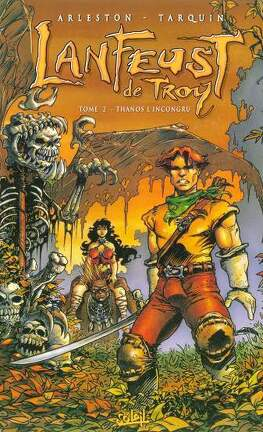
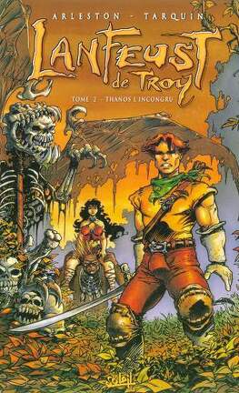

Main characters
Lanfeust
Lanfeust, the eponymous hero, is a young villager and apprentice blacksmith. He was planning on settling down with his fiancée, C'ian, and leading a quiet, peaceful life until he discovered the power that the Magohamoth's ivory bestowed upon him. Though brave enough from the beginning to face extreme danger, Lanfeust remains happy-go-lucky and demonstrates naïveté in many matters of life and love.
His original power allows him to heat and even melt metal at will, a handy trick that led him into blacksmithing. However, his true power arises when he possesses the Magohamoth's ivory. It technically allows him to use any magic
power that has ever existed, but in practice it allows Lanfeust to accomplish almost any magical feat he can imagine.
Lanfeust's name comes from the common Breton place name.
Thanos
A renegade sage from Eckmül's University of Magic, Thanos is also an accomplished pirate and, unknown to many,the tyrannical baron Averroës. Like Lanfeust, when possessing Magohamoth ivory, Thanos becomes almost omnipotent, though
he would use these powers to conquer Eckmül and probably the whole world. Intelligent, opportunistic, and ruthless. Thanos commands the respect and fear of his followers even without his absolute magical power.
As a former sage of Eckmül, Thanos knows many useful spells and rituals. Unlike other sages, Thanos never gave up his original magic power, which allows him to teleport anywhere he's ever been. However, teleporting strips him of mall his possessions, even his clothes.
Thanos's name is a shortened form of the root word thanatos, the Greek word for death. Prepending an a turns the word into its opposite, athanatos, which would mean immortal. Both forms have been used as given names.
Nicolède
nicolède_character">Nicolède serves as the village of Glinin's sage. Like Thanos, Nicolede knows many spells and allows his fellow villagers to use their powers through his mere presence. He's also the village's main source of knowledge on the greater world. Kind and wise, Nicolède serves as a mentor for Lanfeust, his future son-in-law, as well as his daughters C'ian and Cixi. He has little patience for weak morals, which constantly puts him at odds with Cixi.
Nicolede's name refers to Nicolas Flamel (an alchemist) and Archimedes (the ancient engineer).
C'ian

Nicolede's elder daughter, C'ian is Lanfeust's fiancée and Glinin's resident healer. Though extremely beautiful, C'ian is modest, romantic, and wants nothing more than a quiet life with a husband and many children. C'ian's power only functions at night, but it allows her to instantly heal almost any injury or illness imaginable.
C'ian's name refers to the Empress Dowager Ci'an, who was regarded as quiet and respectable unlike her co-ruler, Cixi. C'ian also refers to the color cyan, easily the most used color in her usual garb.
Cixi
Nicolede's younger daughter, Cixi is very beautiful like her sister, but major similarities end there. She is rebellious against father, society, and decency. She dresses and talks provocatively for her time and place. Infatuated with Lanfeust, she attempts to seduce him whenever she can despite reprovals and scoldings from her father and sister. Of all Troy's beings, Lanfeust seems to fear only Cixi and her advances. Cixi can change the phase of water at will. The difficulty of this feat increases greatly as the purity of the water decreases.
Cixi's name refers to the Empress Dowager Cixi, co-regent of China and infamous for her shameless acts.
Hébus
Just like most of his troll species, Hébus was an almost mindless menace to any living thing in his path until he fell under Nicolede's spell. Throughout Lanfeust's adventures, he serves as an excellent bodyguard for his companions/captors. When enchanted, Hébus demonstrates that he's fairly intelligent, witty, and friendly, though he's rowdy and retains many of a troll's rude behaviors. However, if Nicolede's enchantment lapses, Hébus instantly becomes as savage and murderous as he was originally.
The name Hébus is a pun when combined with the word troll (troll Hébus, which in French sounds like trolley bus).
Chevalier Or-Azur
The Or-Azure knight is a knight from the baronies, a region where no one has powers. He lives in a castle by a lake reminiscent of Loch Ness. He's madly in love with C'ian, and he ends up Join Lanfeust's quest in "The Petaurs Hide to Die" to protect C'ian. But at the end of "The Fabulous Beast", he marries C'ian, and takes her to live with him in his castel, leaving Cixi and Lanfeust alone.


 
